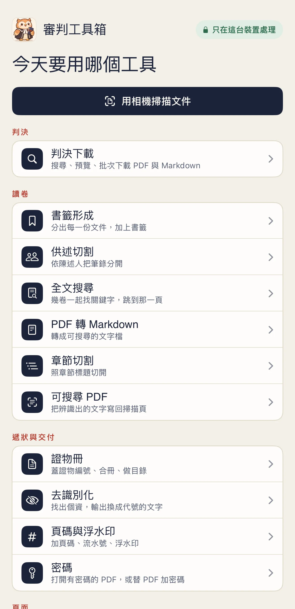
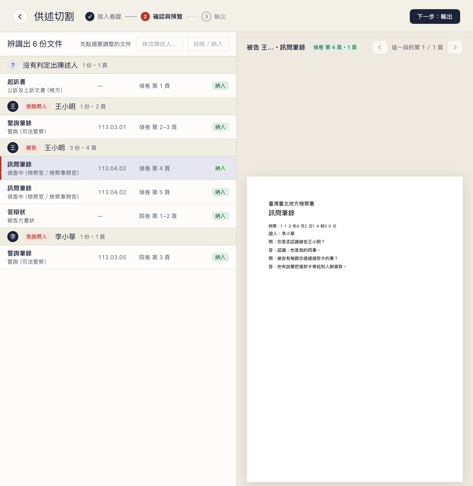

審判工具箱 iPhone・iPad 版上架：在法院、閱卷室就能掃描、查判決、整理卷證
審判工具箱的 iPhone・iPad 版已經在台灣的 App Store 上架，免費下載。Mac 版有的十三個工具，手機和平板上都有，步驟也一樣；卷證一樣只在自己的裝置上處理，不會上傳。這篇不重複各工具的操作，只整理離開辦公桌時，手機和平板派得上用場的幾個時候。
這篇由審判工具箱的開發者撰寫。示範用的卷證是自己做的合成卷，裡面的人名都是虛構的。
iPhone・iPad 版有什麼
iPhone 和 iPad 是同一個 App，需要 iOS／iPadOS 17 以上。打開首頁，最上面是「用相機掃描文件」，下面是四組工具：
- 判決：判決下載。
- 讀卷：書籤形成、供述切割、全文搜尋、PDF 轉 Markdown、章節切割、可搜尋 PDF。
- 遞狀與交付：證物冊、去識別化、頁碼與浮水印、密碼。
- 頁面：頁面整理、圖片與掃描。

每個工具都是同樣三步：放入、確認與預覽、輸出。卷證只在這台裝置上讀取與處理，不會上傳；會連網的只有判決下載（連到司法院的裁判書查詢網站）和免費版的廣告。
拿到紙本時：用相機掃描
開庭時拿到對方當庭提出的書狀、在閱卷室只能看紙本、當事人帶來一疊單據，這類時候手機最方便。按首頁的「用相機掃描文件」，對準紙本拍下，系統會自動找紙張邊緣、拉正，存成一份 PDF。
掃好之後，App 會問「接著用其他工具處理？」，點一個工具就把剛掃好的 PDF 放進去接著做。

掃描出來的是圖片，要找得到字，先接「可搜尋 PDF」，App 會在這台裝置上辨識文字。要編成證物、加頁碼，接「證物冊」或「頁碼與浮水印」。
等開庭時：查判決
「判決下載」可以依法院、裁判日期、關鍵字搜尋司法院公開的判決，先看全文、勾選要的幾則，再一次下載成 PDF 或 Markdown。在法院走廊等庭時，想查某個法院近期同類型案件怎麼判，手機上就能做。
查詢條件與輸出格式的細節在判決下載教學。
在外面看卷：手機核對，平板並排
讀卷工具在手機上一樣能用。以供述切割為例：放入卷證後，App 依陳述人把筆錄分組列出；點一列，就是那一段的整頁預覽，可以核對是不是分對了。
清單

點一列之後

iPad 的畫面夠寬，清單和頁面會左右並排，跟 Mac 版的核對方式一樣。要在會議室或移動中整卷看過一遍，平板比較順。

輸出的檔案在哪裡
輸出前一樣先列出會產生哪些檔案。按下畫面下方的「開始輸出」，檔案存在「檔案」App 的「我的 iPhone › 審判工具箱」（iPad 是「我的 iPad › 審判工具箱」），每次輸出開一個新資料夾，原本的 PDF 不會被改動。

要傳回電腦，可以從「檔案」App 用 AirDrop、iCloud 雲碟，或你平常用的方式。
免費、有廣告，可以一次付費去除
iPhone・iPad 版免費，十三個工具都能用，沒有次數限制。免費版有兩種廣告：畫面最下方的橫幅，以及按「開始輸出」時偶爾出現一則讀秒廣告（最多每 3 分鐘一次）。確認、預覽、搜尋、掃描的過程不會跳廣告，卷證與判決的內容也不會用在廣告上。
不想看廣告，到「關於」按「去除廣告」，一次付費（台灣區 NT$90），之後就不再顯示廣告。換裝置時，用同一個 Apple 帳號在同一個地方按「恢復購買」；iPhone 和 iPad 買一次就好。

和 Mac 版的差別
- 工具、步驟、選項、輸出的檔名都相同。
- iPhone・iPad 版多了相機掃描，檔案從「檔案」App 放入與存放。
- Mac 版沒有廣告，一次買斷；另外多了「交給 AI」：複製一段指示，貼到你用的 AI 工具，請它整理輸出的檔案（App 本身不呼叫任何 AI）。
- Mac 版和 iPhone・iPad 版是兩個 App，要分別取得；兩邊的資料（最近的工作、搜尋資料）各自留在自己的裝置上，不會同步。
整卷幾百頁的核對、要把輸出交給 AI 整理，在 Mac 的大螢幕上做比較順；臨時要掃描、查判決、看一份筆錄，手機就夠了。「交給 AI」的用法在交給 AI 教學。
要注意的地方
- 目前只在台灣的 App Store 上架。
- 幾百頁的掃描卷，辨識文字要花一些時間，手機上比 Mac 慢；大卷建議接上電源，或在 Mac 上做。
- 相機掃描的品質取決於光線與紙張平整，拍完請看一下是否每頁都清楚。
- App 的辨識結果（陳述人、文件種類、個資）都可能出錯，輸出前請在確認與預覽那一步核對。
手機與平板上每個按鈕在哪裡，請看iPhone・iPad 使用教學。
常見問題
審判工具箱的 iPhone・iPad 版要錢嗎？
免費下載，十三個工具都能用，沒有次數限制。免費版有橫幅與偶爾出現的讀秒廣告，可以在「關於」一次付費 NT$90 去除。
卷證會上傳到雲端嗎？
不會。卷證只在這台裝置上讀取與處理，文字辨識也在裝置上做。會連網的只有判決下載（連到司法院的裁判書查詢網站）和免費版的廣告。
iPhone 買了去除廣告，iPad 也要再買一次嗎？
不用。iPhone 和 iPad 是同一個 App，在另一台用同一個 Apple 帳號按「恢復購買」即可。Mac 版是另一個 App，本來就沒有廣告。
iPhone 上有「交給 AI」嗎？
沒有，「交給 AI」只有 Mac 版。iPhone・iPad 版有去識別化與還原。
輸出的檔案存在哪裡？
「檔案」App 的「我的 iPhone（iPad）› 審判工具箱」，每次輸出一個新資料夾。